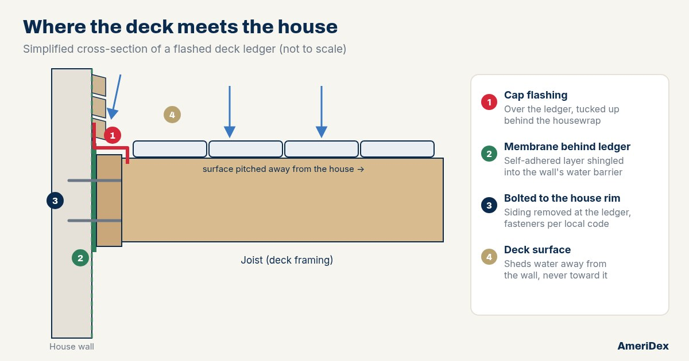

Most decks attached to a house hang one side off a ledger board bolted to the house framing. It is one of the most important connections on the whole deck, and it lives in the worst possible spot for water: at the base of a wall that collects runoff, under the edge of the deck boards, and right against the rim joist of your home. When flashing there is missing or done wrong, water gets behind the ledger and stays there, and nobody sees it until the damage shows up somewhere else.
Why the ledger is the spot to get right
Water that reaches the back of the ledger does not just wet one board. It can soak into the ledger, the house rim joist behind it, and the sheathing around it, and it can work its way into the wall or basement. Because that wood is sandwiched together, it dries slowly. Over time that is how a ledger connection loses its grip, which makes this a safety question as much as a moisture one. It is the same slow soak we describe in why decks rot from the top down, just at the one joint you cannot afford to have fail.
Flashing is cheap. The rim joist of your house is not.
How a flashed ledger is layered
Details vary with the wall type, the siding, and your local code, but a well-flashed ledger generally follows the same idea as shingles on a roof: every upper layer laps over the one below, so water is always led outward and down, never behind.
Open up the wall at the ledger
Siding comes off where the ledger will go. A ledger bolted on over siding traps water behind it and does not give the fasteners solid bearing on the house framing.
Membrane behind the ledger
A self-adhered flashing membrane goes on the wall where the ledger will sit, lapped so the house's water-resistive barrier (the housewrap) overlaps it from above.
Fasten the ledger to the house rim
The ledger is attached to the house band with the fastener type, size, and pattern your local code and the fastener maker call for, usually through-bolts or approved structural screws.
Cap flashing over the top
A metal or vinyl flashing covers the top of the ledger and turns down its face, with the upper leg running several inches up the wall and tucked behind the housewrap, so water running down the wall lands on the outside of the flashing.
Siding back on, with room to drain
Siding goes back over the upper leg of the flashing, held up slightly so it does not sit in standing water. Never caulk the flashing shut at the bottom where it needs to drain out.
Modern pressure-treated lumber contains copper-based preservatives that can corrode aluminum. Uncoated aluminum flashing should not sit directly against treated wood; separate it with a membrane, or use copper or vinyl flashing instead. The Dexerdry installation guidance says the same: aluminum needs a barrier against pressure-treated lumber, while copper can touch it.
Signs your ledger flashing may be failing
You do not need to tear anything apart to get a first read. On a dry day, take a flashlight under the deck and, if you have a basement, look at the inside of the wall behind the deck too.
Red flags
- Dark staining or rust streaks running down the face of the ledger
- Wood that is soft or crumbly when you press it with a screwdriver
- No visible flashing at all above the ledger
- Water marks or a musty smell on the basement rim joist behind the deck
- Siding bowed, stained, or peeling just above the deck
What to do
- Keep gutters above the deck clean so the wall is not flooded
- Clear leaves packed against the house along the deck
- Photograph what you find so a pro can compare later
- Have a qualified deck builder or inspector look at any soft wood
- Plan to redo the flashing whenever the boards come off
Soft wood at the ledger is not a wait-and-see item. Get it looked at before the deck carries a crowd. Our fall deck maintenance checklist covers the rest of the walk-around.
What changes when the deck surface is sealed
On a conventional deck, rain falls through the board gaps all the way across, including right next to the house, and runs over the ledger on every storm. A below-joist drainage system catches that water underneath, but it does not change what happens at the ledger, and a finished ceiling can hide the area you most want to inspect.
With an above-joist deck like AmeriDex, the boards and the Dexerdry seal shed rain off the top, so the framing and the ledger stay out of the water coming through the deck. That changes the job at the wall rather than eliminating it. The deck is pitched 1/8 inch per foot away from the house, so the wall is the high side, and the wall itself still gets wet from rain and roof runoff. That is why the Dexerdry installation steps call for flashing the ledger before any decking goes down, and on decks where the boards run perpendicular to the house, sealing the first board to the ledger and the house and then adding an L flashing a few inches up the wall with membrane and trim over it. The Dexerdry install help page walks through those details, and our builder's guide covers the rest of a watertight install.
Flash the ledger like a roof: membrane behind it, cap flashing over it tucked under the housewrap, the right metal against treated wood, and a deck surface that moves water away from the wall. If your boards are coming off anyway, that is the best time to get it right.
Building new or re-decking?
A new deck or a full re-deck is the one chance to get the ledger, the flashing, and the surface right together. Start a free quote and tell us about the deck and the wall it attaches to, request free samples to see the boards and the Dexerdry seal up close, or read second-story deck waterproofing if your deck sits over a patio you want to keep dry.